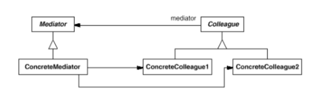
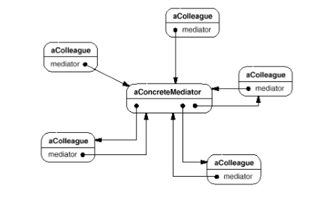
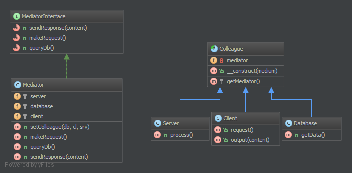

前言 这是一个系列里面的一篇，主要介绍的一些 PHP 下的设计模式，大部分来自于 DesignPatternsPHP 项目，可能会加上《Design Patterns》里面的一些内容。因为都是英文版的，所以翻译的时候会出现一些偏差，不要期待太多噢！
目的 中介者模式定义了一个对象用来封装一组对象之间的交互行为，通过减少对其他对象的引用来解耦，并且允许独立地修改交互行为。
使用场景
一组对象之间的交互逻辑非常复杂
由于对象交互太多而导致重用困难
几个类之间的逻辑行为，不使用很多子类就可以定制化
结构

一个典型的结构如下：

参与者
Mediator
ConcreteMediator
通过协同多个 Colleague 来实现协同行为
可获得且负责维护 Colleague 对象
Colleague classes
持有 Mediator 对象
通过 Mediator 和其他 Colleague 通讯
PHP 下的例子 UML 图

简要代码 Colleague Colleague 持有 Mediator 对象，并通过 Mediator 与其他 Colleague进行通讯。
1 2 3 4 5 6 7 8 9 10 11 12 13 14 15 16 17 18 19 20 21 22 23 <?php abstract class Colleague private $mediator; public function __construct (MediatorInterface $medium) { $this ->mediator = $medium; } protected function getMediator () { return $this ->mediator; } }
MediatorInterface 定义了 Mediator 接口，只是为了结构清晰，不是强制的。
Mediator 实现 MediatorInterface 接口，持有 Colleague 对象，并负责它们之间的通讯。
1 2 3 4 5 6 7 8 9 10 11 12 13 14 15 16 17 18 19 20 21 22 23 24 25 26 27 28 29 30 31 32 33 34 35 36 37 38 39 40 41 42 43 44 45 46 47 48 49 50 51 52 53 54 55 56 57 58 <?php class Mediator implements MediatorInterface protected $server; protected $database; protected $client; public function setColleague (Subsystem\Database $db, Subsystem\Client $cl, Subsystem\Server $srv) { $this ->database = $db; $this ->server = $srv; $this ->client = $cl; } public function makeRequest () { $this ->server->process(); } public function queryDb () { return $this ->database->getData(); } public function sendResponse ($content) { $this ->client->output($content); } }
使用 1 2 3 4 5 <?php $media = new Mediator(); $client = new Client($media); $media->setColleague(new Database($media), $this ->client, new Server($media)); $client->request();
其他 Client , Database , Server 为基础类
结论 Mediator 持有所有的 Colleague 对象并实现了相互之间的行为逻辑，每个 Colleague 都持有 Mediator 对象，通过调用 Mediator 对象的行为逻辑来和其它 Colleague 进行通讯。